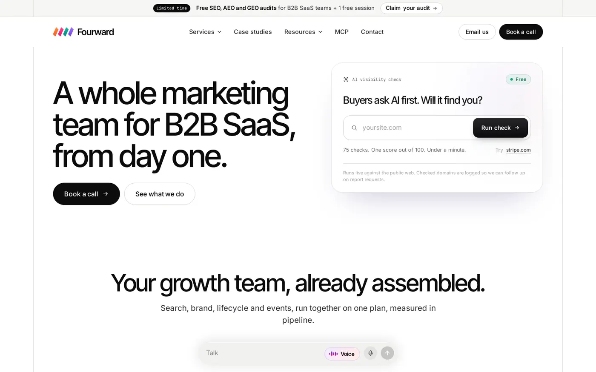
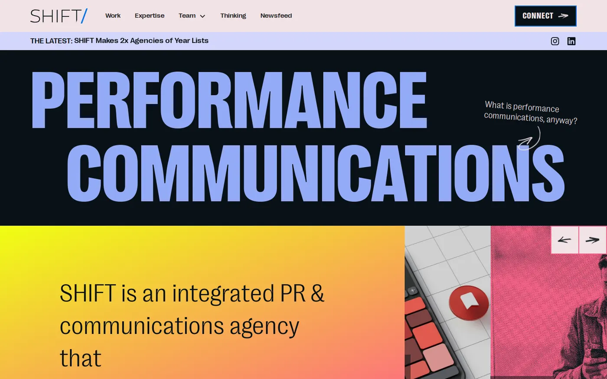
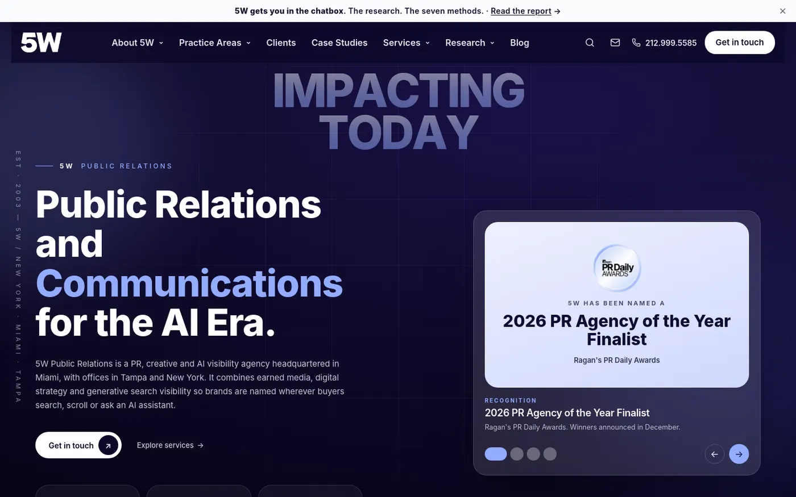
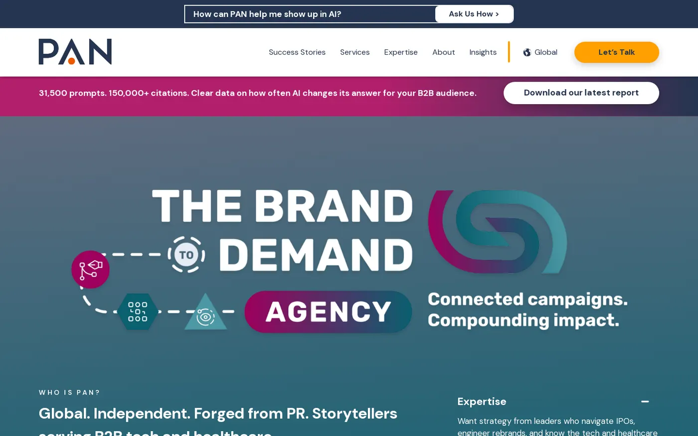
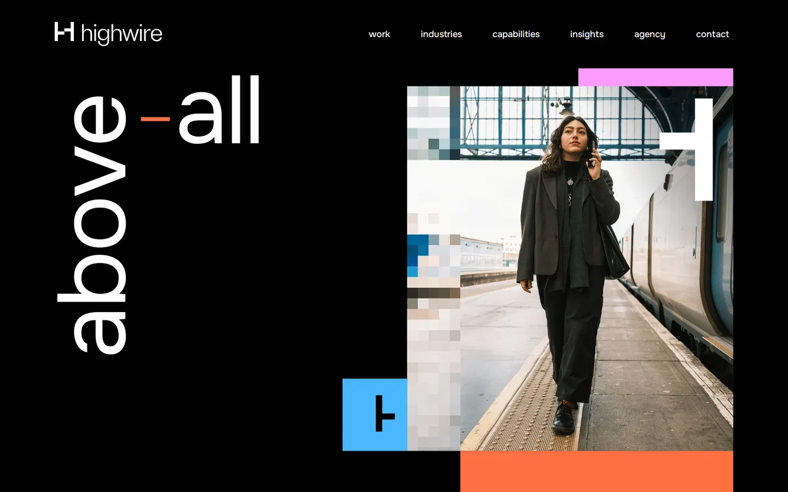
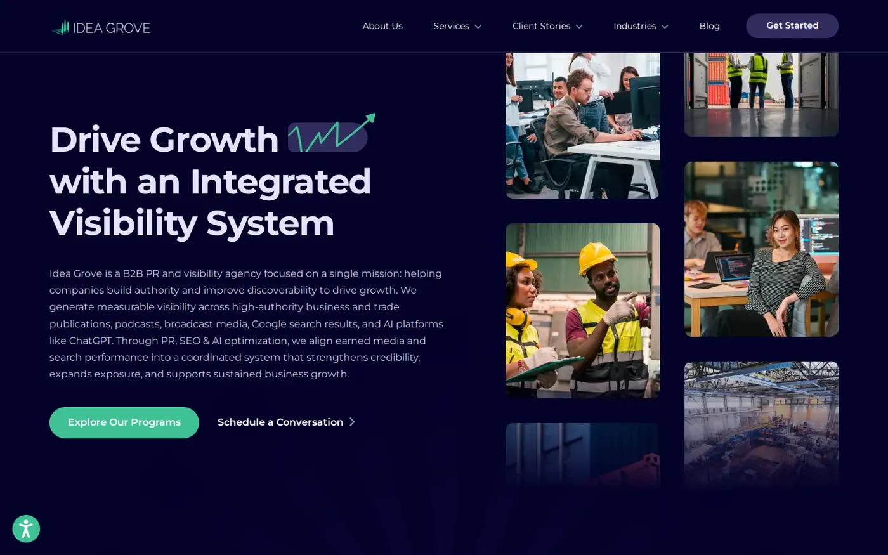
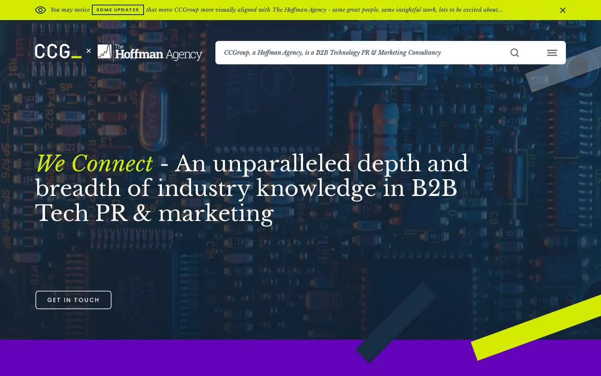
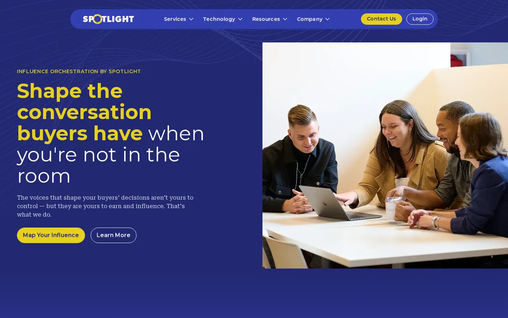

On this page
A B2B PR agency gets a business-to-business company covered by the journalists and industry analysts its buyers trust. For 2026, I would shortlist Fourward, SHIFT Communications, 5W Public Relations and PAN Communications for press and analyst work. If analyst reports decide your deals, add a specialist such as CCGroup or Spotlight. Published prices run from Idea Grove's suggested $7,500 monthly minimum to 5W's $75,000 or more a month.
This post compares eight agencies on media relations, analyst relations, pricing model and fit, so you can build a shortlist of two or three.
I lead brand, PR and partnerships at Fourward, which publishes this guide. Fourward is my team, so it is listed first. Every fact about another agency comes from that agency's own website, checked on 18 November 2026. No agency paid to be included.
- A B2B PR agency is a firm that earns a business-to-business company coverage from journalists and attention from industry analysts, the two groups buyers check before they shortlist.
- Media relations gets you into news sites and the trade press. Analyst relations gets you in front of research firms such as Gartner and Forrester, whose reports buyers use.
- Few agencies publish prices. 5W starts at about $15,000 a month, and Idea Grove's guide suggests budgeting $7,500 to $15,000 a month.
- Judge an agency by the outlets and analysts your buyers read, not by how many placements it counts. Our guide to B2B brand building explains why being named in those places matters.
What a B2B PR agency does
PR (public relations) is the work of getting other people to tell your story. In B2B, the people who matter most are trade journalists and industry analysts, because buyers read both before they buy.
Most PR proposals use the same few terms:
- Media relationsPitching stories, data and expert comment to journalists, then handling interviews and launch news.
- Analyst relations (AR)Briefing analysts at research firms such as Gartner and Forrester, so they understand your product when they advise buyers.
- Magic Quadrant and WaveGartner's and Forrester's reports that compare vendors in one market. An agency can help you prepare, but the analysts write the report.
- Thought leadershipBylined articles, talks and LinkedIn posts that show your founders or experts know the problem well.
- RetainerA fixed monthly fee for ongoing work.
A digital PR agency does a narrower job. It mostly earns links and mentions on websites, and our list of the best digital PR agencies covers those firms.
The agencies below differ most on analyst relations. Ask about it on the first call, not after you sign.
How I picked them
I started from the agencies that come up most in searches for B2B and tech PR agencies, then kept those whose own sites show B2B work. On 18 November 2026 I checked each site for media relations, analyst relations, who they serve and price.
I didn't hire any of them, so nothing here claims hands-on results. Our team is first. Then come three full-service B2B PR firms, an integrated communications agency, a mid-budget option and two analyst relations specialists.
The best B2B PR agencies at a glance
The same four facts for every agency, taken from its own site. Scroll the table sideways on a phone.
| Agency | Best for | Media relations | Analyst relations | Published price |
|---|---|---|---|---|
| Fourward | PR planned with brand, search and AI visibility | Yes, in the trade media buyers read | Not a listed service | Priced in a written plan |
| SHIFT Communications | B2B PR aimed at people and AI answers | Listed service | Listed service | Not published |
| 5W Public Relations | A large firm with a public price | In its SaaS retainer guide | Analyst outreach, in the same guide | From about $15,000 a month |
| PAN Communications | Analyst relations for B2B tech and healthcare | Not on the page I checked | Dedicated service | Not published |
| Highwire | PR inside wider marketing communications | Part of its integrated programs | Not on the pages I checked | Not published |
| Idea Grove | B2B tech, manufacturing and industrial brands | Public relations is a listed service | Not on the pages I checked | Suggests $7,500 a month as a minimum |
| CCGroup | Gartner and Forrester report cycles | Not on the page I checked | Core service | Not published |
| Spotlight | Analyst relations as the main job | Not on the page I checked | Core service | Not published |
1. Fourward
Best for B2B SaaS teams that want PR planned by the same senior team as their brand, search, content and AI visibility.

Fourward is one senior team for search, content and AI visibility; brand, PR and partnerships; and lifecycle marketing. I lead the brand, PR and partnerships work. My work covers positioning, press coverage in the trade media buyers read, reviews and listings, partners, founder thought leadership and LinkedIn.
Because one team plans all of it, the story we pitch to journalists matches the pages, reviews and listings buyers find next. We were founded in 2026 and are based in India.
- Media relationsPress coverage in the trade media your buyers read, plus founder thought leadership and LinkedIn.
- Analyst relationsNot a listed service. If analyst reports decide your deals, pair us with a specialist such as CCGroup or Spotlight.
- PricingSet in a written plan after the free audit.
- How it startsA free SEO, AEO (answer engine optimization) and GEO (generative engine optimization) audit, plus 30 minutes with the team. It lists problems and scores, not fixes. A written plan with the price follows within 24 hours.
My take The pick if you want PR tied to your positioning, reviews and search work, not bought as a separate retainer. You see the plan and the price in writing before you sign. Book the free audit.
2. SHIFT Communications
Best for B2B tech brands that want media relations, analyst relations and thought leadership from one agency.

SHIFT Communications (SHIFT) runs a dedicated B2B PR practice. SHIFT's B2B page says "we build audience-centric and LLM-centric B2B PR programs." An LLM (large language model) is the technology behind ChatGPT and similar AI tools. In plain words, SHIFT plans PR for human readers and for AI answers.
- Media relationsA listed service on its B2B PR page.
- Analyst relationsA listed service on the same page.
- Also offersThought leadership, listed next to media and analyst relations.
- PricingNot published. Ask for a written scope and quote.
My take On the pages I checked, SHIFT and 5W are the only agencies here that name both media and analyst work for B2B. Ask how SHIFT measures the AI side of its programs before you sign.
3. 5W Public Relations
Best for Funded SaaS and B2B tech companies that want a large firm and a price range before the first call.

5W Public Relations is one of two agencies here that put a number on price. 5W's guide to choosing a SaaS PR agency says its retainers "start at around $15,000 per month and run to $75,000 or more, depending on scope and service."
The same guide sets out what a retainer should cover: "A SaaS PR retainer should include media relations, analyst outreach, thought leadership and monthly reporting."
- Media relationsFirst in its guide's list of what a SaaS retainer should include.
- Analyst relations"Analyst outreach" is in the same list.
- PricingRetainers from about $15,000 a month to $75,000 or more, by scope.
- Pricing modelMonthly retainer. The form on its guide page also asks whether you want a retainer or a project.
My take A clear price range is rare in PR, and 5W gives one. At $15,000 a month and up, it suits companies with funding and a steady flow of news to pitch.
4. PAN Communications
Best for B2B technology and healthcare companies that want a dedicated analyst relations team inside a PR agency.

PAN Communications (PAN) runs analyst relations as part of its B2B public relations services. Its page says "PAN's analyst relations services help brands build meaningful, sustained relationships with the analyst community." PAN adds that it partners with B2B technology and healthcare companies on their work with analysts.
- Media relationsNot covered on the analyst relations page I checked. Ask for the media side in the same proposal.
- Analyst relationsA dedicated service, aimed at sustained relationships with analysts.
- Who it servesB2B technology and healthcare companies.
- PricingNot published.
My take A strong fit when analysts shape your market and you want PR from the same firm. Ask who on the team has briefed the analysts in your category.
Free check. 75 checks, one score out of 100, under a minute.
5. Highwire
Best for B2B technology companies that want PR as one part of a wider push, such as a brand relaunch or a campaign.

Highwire calls itself "A strategic marketing communications agency built for industry changers." Highwire's homepage lists B2B technology as one of its industries. Highwire's old highwirepr.com address now redirects to teamhighwire.com.
Highwire's agency page says its integrated programs combine digital and social media channels, media relations, and editorial and creative services.
- Media relationsPart of its integrated programs, next to social, editorial and creative work.
- Analyst relationsNot named on the pages I checked.
- Also offersBrand relaunches, campaigns and what it calls "market-moving opinion leadership".
- PricingNot published.
My take Worth a call if PR is one part of a bigger brand or campaign project. If analysts matter to your buyers, ask for its analyst work in writing.
6. Idea Grove
Best for B2B technology, manufacturing and industrial brands with a mid-size PR budget.

Idea Grove calls itself "a B2B PR and visibility agency focused on a single mission." Idea Grove works with "B2B technology, manufacturing and industrial brands," and lists public relations next to brand strategy, content marketing and AI visibility work.
Idea Grove's 2026 cost guide is unusually open about price. The guide says: "we've increasingly come to believe that $7,500 is a better minimum for a comprehensive B2B PR relationship."
- Media relationsPublic relations is a listed service. The homepage doesn't break it down further.
- Analyst relationsNot named on the pages I checked.
- PricingIts cost guide suggests budgeting $7,500 to $15,000 a month, and puts B2B PR projects at $10,000 to $25,000 or more.
- Pricing modelA monthly retainer or a one-off project.
My take The best-documented mid-size budget in this list. Idea Grove's homepage doesn't mention analyst relations, so ask before you count on it.
7. CCGroup
Best for Enterprise IT, cybersecurity, telecoms, deep tech and fintech brands preparing for Gartner and Forrester reports.

CCGroup is a London analyst relations agency and part of The Hoffman Agency. CCGroup offers "Strategic support for major analyst reports, including Gartner Magic Quadrants and Forrester Waves." The agency says it has "worked with leading brands in enterprise IT, cybersecurity, telecoms, deep tech and fintech."
- Media relationsNot on the analyst relations page I checked.
- Analyst relationsThe core service, including support for Magic Quadrants and Waves.
- Who it servesEnterprise IT, cybersecurity, telecoms, deep tech and fintech brands.
- PricingNot published.
My take The most specific offer here for a Magic Quadrant or Wave cycle. Because CCGroup is part of The Hoffman Agency, ask whether media relations can sit in the same scope.
8. Spotlight
Best for B2B software, tech and services firms that want an analyst relations specialist, not a general PR agency.

Spotlight works on analyst relations, which its site now calls influence orchestration. It says "Spotlight has helped 190+ B2B organizations orchestrate influence across every credible market voice." Spotlight's old spotlightar.com address now redirects to spotlight-io.com.
Spotlight's library includes a guide called "7 Essential Steps to Successfully Submit a Forrester Wave Evaluation."
- Media relationsNot on the about page I checked.
- Analyst relationsThe core service, with guides on Forrester Wave submissions.
- Who it serves190+ B2B clients across software, tech and services, by its own count.
- PricingNot published.
My take Pick a specialist like Spotlight when analyst reports decide your deals. Pair it with a media-led agency or an in-house PR lead for press coverage.
How much a B2B PR agency costs
Most B2B PR agencies don't publish prices. These are the published figures I found, all from agencies' own pages, checked on 18 November 2026.
| Source | What it says | What the figure is |
|---|---|---|
| 5W Public Relations | About $15,000 to $75,000 or more a month, by scope | Its own retainers |
| Idea Grove | $7,500 to $15,000 a month, with $7,500 as a better minimum | Its budget advice for B2B PR |
| Idea Grove | $10,000 to $25,000 or more | Its range for one B2B PR project |
| Bridgehead Communications | About £2,000 to £15,000 a month | Its estimate for UK B2B tech PR retainers |
A London PR firm, Bridgehead Communications, explains why the range is so wide. Its guide says "Seniority mix is the single biggest lever on price." In plain words, the more senior the people on your account, the higher the fee.
The four pricing models you will see
- Monthly retainerA fixed fee for ongoing media and analyst work. 5W and Idea Grove both quote retainers.
- Project feeOne price for a set job, such as a product launch or a funding announcement.
- Pay per placementYou pay for each article you get. None of the eight agencies here publishes this model, but our list of digital PR agencies includes firms that do.
- Analyst programAsk whether analyst work sits inside the retainer or is priced on its own. Neither analyst specialist here publishes a price.
For how marketing agencies price their work more broadly, see our guide to SaaS marketing agency pricing.
Pay for senior time, not volume. One senior person pitching the outlets your buyers read is worth more than a long list of press releases.
How to choose a B2B PR agency
Start with who your buyers trust: journalists, analysts or both. Then match your budget to the published ranges above.
| Your situation | Start with | Why |
|---|---|---|
| You want PR planned with your brand, reviews and search | Fourward | One senior team across brand, PR and search |
| You need press and analysts from one firm | SHIFT Communications or PAN Communications | Both list analyst relations as a service |
| You want a price range before the first call | 5W Public Relations | Publishes retainers from about $15,000 a month |
| Your budget is $7,500 to $15,000 a month | Idea Grove | Its own guide budgets for that range |
| A Magic Quadrant or Wave decides your deals | CCGroup or Spotlight | Analyst relations is their core service |
| PR is one part of a brand relaunch | Highwire | Integrated programs that include media relations |
Questions to ask on the first call
- Which outlets and analysts will you target for us? Ask for names, then check that your buyers read them.
- Who will do the work each week? The person who pitches journalists matters more than the person who sold you the deal.
- How do you handle analysts? Ask whether analyst briefings and report submissions are in the scope or priced extra.
- What will you report each month? Coverage in named outlets and analyst meetings held tell you more than a count of releases sent.
- What do you need from us? PR runs on news, data and expert time, so agree how much of each you can give.
Our list of questions to ask a marketing agency covers contracts, reporting and exit terms before you sign.
Mistakes to avoid when hiring a B2B PR agency
Most bad PR hires come from a mismatch between the agency's strength and what your buyers read.
- Hiring for media when analysts decide the deal. In enterprise software, check whether your buyers read analyst reports before you pick a media-led agency.
- Judging by logos and awards. Ask for the outlets and analysts the team will target for you instead.
- Paying senior rates for junior work. Ask who writes and sends the pitches, since seniority mix drives the price.
- Expecting an agency to buy a report spot. Agencies help you prepare and brief, but the analysts decide who is in the report.
- Ignoring AI answers. SHIFT is one agency that now plans PR for AI answers as well as people. Our free AI visibility check shows what AI engines can read about your site.
A full SEO, AEO and GEO audit, plus 30 minutes with our team to walk you through it.
FAQs
What is the best B2B PR agency?
It depends on whether your buyers trust journalists, analysts or both. For PR planned with your brand and search work, start with Fourward. For media and analyst relations in one firm, look at SHIFT Communications or PAN Communications, and for analyst reports, CCGroup or Spotlight.
How much does a B2B PR agency cost?
Published figures here run from Idea Grove's suggested $7,500 monthly minimum to 5W's $75,000 or more a month. Bridgehead Communications puts UK B2B tech PR retainers at about £2,000 to £15,000 a month.
What is the difference between media relations and analyst relations?
Media relations gets your company covered by journalists and the trade press. Analyst relations briefs research firms such as Gartner and Forrester, whose reports buyers use when they compare vendors.
Can a PR agency get us into a Gartner Magic Quadrant?
No agency can promise a place, because the analysts decide who is in the report. A specialist such as CCGroup or Spotlight can help you prepare, brief the analysts and submit what the report asks for.
Should I pay a retainer or a project fee?
Pay a retainer when you have a steady flow of news and want ongoing analyst contact. Pay for a project when you have one launch or announcement, which Idea Grove's guide puts at $10,000 to $25,000 or more.
Sources
- How to Choose a B2B Tech or SaaS PR Agency: 8 Questions, 5W Public Relations, updated 29 October 2026, checked 18 November 2026.
- Top B2B PR Agency, B2B Tech PR Agency, SHIFT Communications, checked 18 November 2026.
- Analyst Relations Agency, PAN Communications, checked 18 November 2026.
- Strategic Marketing Communications For Industry Innovators and Agency, Highwire, checked 18 November 2026.
- B2B PR Firm for B2B Brands, Idea Grove, checked 18 November 2026.
- How Much Does a B2B PR Agency Cost in 2026?, Idea Grove, 16 August 2026, checked 18 November 2026.
- Industry Analyst Relations Agency London, CCGroup, a Hoffman Agency, checked 18 November 2026.
- Spotlight: Analyst Relations, Influence Orchestration and 7 Essential Steps to Successfully Submit a Forrester Wave Evaluation, Spotlight, checked 18 November 2026.
- B2B Tech PR Agency Costs in 2026: What to Expect, Bridgehead Communications, 17 August 2026, checked 18 November 2026.